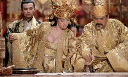
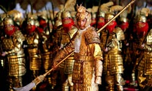
The film is based on Cao Yu’s 1934 play "Thunderstorm", although Zhang transferred the story to the Imperial court in ancient China, when the original was set on the period before the Japanese invasion. With a budget of US$45 million, it was the most expensive Chinese film at the time, and Zhang implemented the majority of the budget on the impressive representation of the era, both in set design and costumes.
On the eve of the Double Ninth Festival, the Emperor and his second son return from a military campaign to celebrate with their family. However, the relationship of the Emperor with the Empress is in very bad shape, since she has been having an affair with the first son and heir, who was born of the Emperor’s previous wife. He, however, has a relationship with the daughter of the Imperial Doctor, and is willing to reject the throne and run away with her. At the same time, the second son worries for his mother’s deteriorating health, and the fact that she has become obsessed with golden flowers.
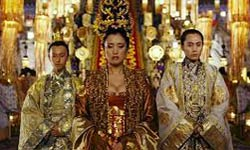
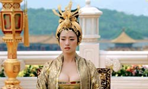
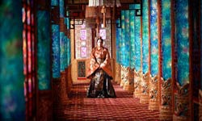
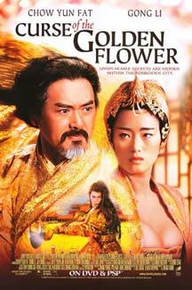
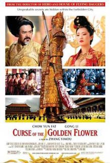
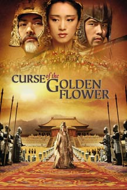
Due to the film's high-profile while it was still in production its title, which can be literally translated as 'The Whole City is Clothed in Golden Armour', became a colourful metaphor for spring 2006 sandstorms in Beijing and the term 'golden armour' has since become a metaphor for sandstorms among the locals.
The US release received a generally positive reception. It has grossed over $78 million worldwide. It was also the third highest grossing non-English language film in 2006 after Apocalypto and Pan's Labyrinth.
The review ranking site Rotten Tomatoes' critical consensus states, "Melodrama, swordplay, and CG armies - fans of martial arts epic will get what they bargain for, though the baroque art direction can be both mesmerising and exhaustively excessive".
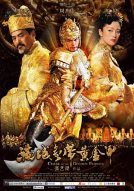
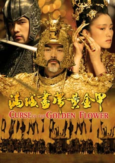
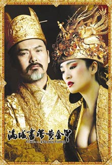